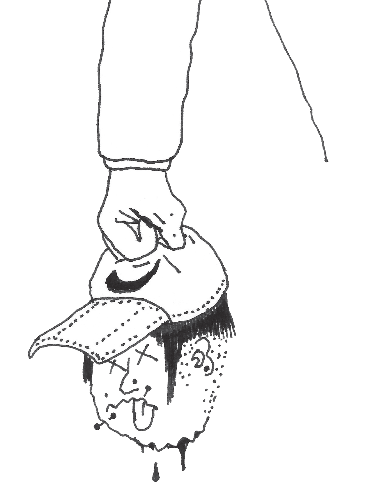

Maltrato policial
No me dejan estar

El Paragua simplemente estaba en la plaza. Pero a algunos no les gusta que uno simplemente esté
Cae la tarde.
Con ánimo pornográfico el otoño va desnudando a los árboles, las hojas bautizan la plaza, y el Paragua mira a dos pibitos corriendo como locos atrás de una pelota.
“Parecen dos perros salvajes jugando con una presa”, y mil reflexiones más flashea el Paragua, sentado en uno de los bancos de porlan, tomando un vino del pico, intuyendo el fi n de otro día igual al anterior.
Sin saber por qué, se descubre acariciándose la cicatriz que le recorre la cintura como una serpiente: hace un año chocó con la moto y terminó en silla de ruedas hasta que lo salvaron “Dios y la marihuana”.
Cierra los ojos, recuerda el accidente (o tal vez a la piba a la que le juró amor en una playa helada de Comodoro Rivadavia), y le da otro trago al vino.
En de repente, en medio del beso, un golpe en la frente lo descoloca y cae al suelo.
Cuando abre los ojos, una 22 le está apuntando el entrecejo. El Paragua atina a levantarse dentre las hojas, y uno de los milicos, el que está enfi errado, lo vuelve a acostar con una nueva patada, esta vez en el pecho. El otro, que está un poco más alejado, lo mira con una sonrisa mierdera mientras vacía la botella sobre el pasto de la plaza.
Acto seguido, se van sin decir palabra.
Y el Paragua se queda en el piso, mirando el barro tinto con esa fi jeza vidriosa en los ojos que sólo tienen los borrachos, y los humillados.